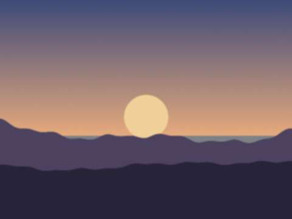

Aug252006
Pilgrimage to Iyık Janyl
Friday, August 25th, 2006 at 9:30 pm by BethThe St. Tomas parish took a bus to Iyık Janyl for the Feast of St. Janyl (24 August), with the pilgrims. It took the whole day to get there, in a bus with no air conditioning and forty people singing. The Church of St. Janyl is on a hill. The line to touch the doors went down the whole hill, and an old Iradi woman beside me kept pressing a handful of candy into Lily's hand.
Inside it's nothing like our churches. A dome, no pews, no statues, and a screen made of carved walnut in front of the altar. The chant was strange and beautiful and I understood none of it. I stood in the back with my eyes shut. I think that's how it is meant to be listened to.

The hill at the end of the day.